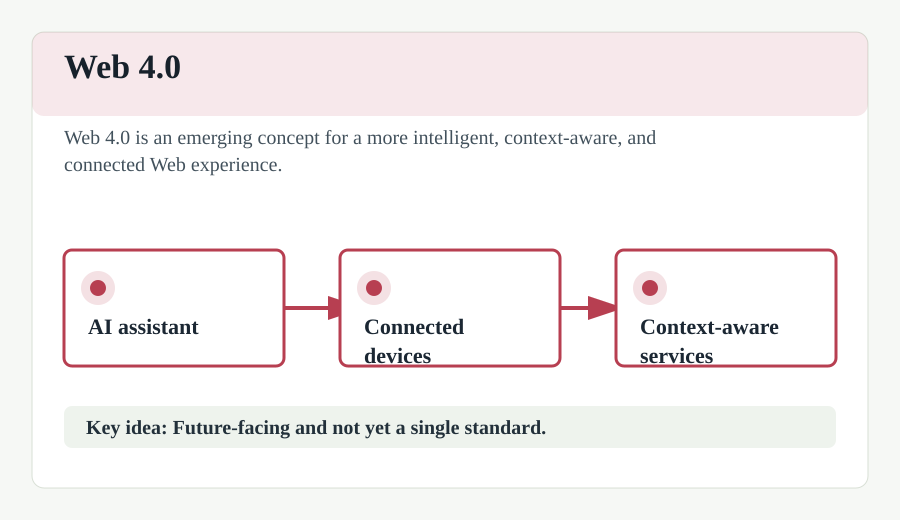

Web 4.0
Web 4.0, often called the "Symbiotic Web" or "Intelligent Web," is a vision of the future Web where human and machine interaction becomes seamless and highly integrated.
It is characterized by the massive use of AI, the Internet of Things (IoT), and highly personalized services that can anticipate user needs. In this era, the Web is expected to be ubiquitous, meaning it will be integrated into almost every aspect of daily life through smart devices and environments.
